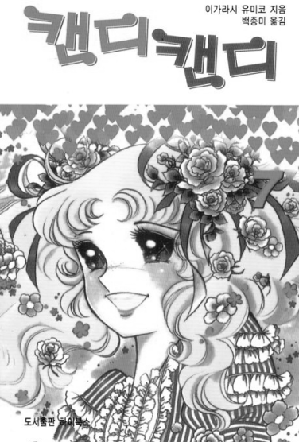

<< 캔디캔디 >>
작가 : 나기타 케이코(스토리), 이가라시 유미코(작화)
명칭 : 캔디캔디, 캔디♥캔디, 들장미 소녀 캔디
연재 : 1975.4 ~ 1979.9
1차 세계대전 전후의 영국과 미국을 배경으로 한 만화
줄거리 ->
긍정적인 캔디가 고달픈 생활에도 이겨내고 살아간다

명칭 : 캔디캔디, 캔디♥캔디, 들장미 소녀 캔디
연재 : 1975.4 ~ 1979.9
1차 세계대전 전후의 영국과 미국을 배경으로 한 만화
줄거리 ->
긍정적인 캔디가 고달픈 생활에도 이겨내고 살아간다